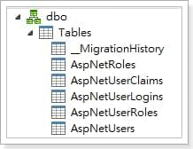
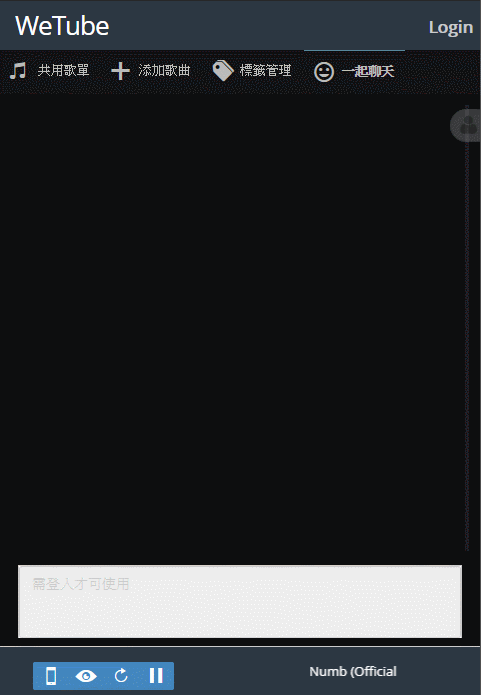

一年前我利用閒暇時間開發了公司內部小團體用的聊天室(玩具性質)，並一直持續的維護與改善到現在，也由於是一年前的專案，所以在參考文章內所提及的資料時，還請搭配Google佐證；本系列文章依舊是在分享思路，並紀錄此聊天室的成長過程。
注意事項
本文基於Visual Studio 2015與AspNet.Mvc5撰寫，因為後來在2017建立範本專案時，找不到下面文章所提到的會員系統頁面了，並且各種後端程式語言的差異較大，還用到了一些框架提供的Scaffold，所以在這特別提一下。
會員系統
要能夠讓使用者在聊天室中識別彼此的身分，會員制是不可或缺的。因為此專案的需求相對簡單，所以直接使用範本專案的ASP.NET Identity會員機制就可以了，這樣也同時完成了註冊、登入、登出、忘記密碼…等麻煩的功能。
建置資料庫
會員系統需要什麼資料表？這些我們可以統統不考慮，因為全部都在套件提供的IdentityDbContext裡面，但之後我們也有可能會加入自己的資料表，所以必須自己實作一個DbContext來繼承IdentityDbContext。
1 | public class ApplicationDbContext : IdentityDbContext<ApplicationUser> |
接下來使用Code First布署DB，就可以看到會員系統所需的相關資料表都建好了，理論上在這時，我們範本專案的會員系統頁面也可以正常運作了。

密碼驗證
ASP.NET Identity雖然便利，但註冊時的預設密碼驗證卻相當嚴謹，居然需要大小寫、特殊符號、英數字、長度限制，這也導致了使用者註冊完後常常會忘記自己的密碼，如果大家不介意的話，就像我一樣把驗證拔光光吧。
1 | UserManager.PasswordValidator = new PasswordValidator |
重置密碼
重置密碼需要串接Email來寄送重置連結給使用者，使用者收信後再透過連結重置密碼；雖然我覺得這沒什麼問題，但同事們覺得麻煩，討論過後就改成了輸入Email與使用者名稱可直接導向重置連結，這也造成了被他人重置密碼的可能性，不過大家都是自己人，於是我也就這麼做了。
1 | public class ForgotPasswordViewModel |
1 | [] |
Demo
可以從下面的Gif中看到登入、註冊、登出的操作情境，畫面跟範本專案比起來當然是有稍微調整過的，這在後續章節才會提到。

結語
聊天室所需要的會員系統就這樣完成了，雖然ASP.NET Identity還有很多的潛力可以發掘，但我這次用不到，就放到以後有機會再來研究吧！